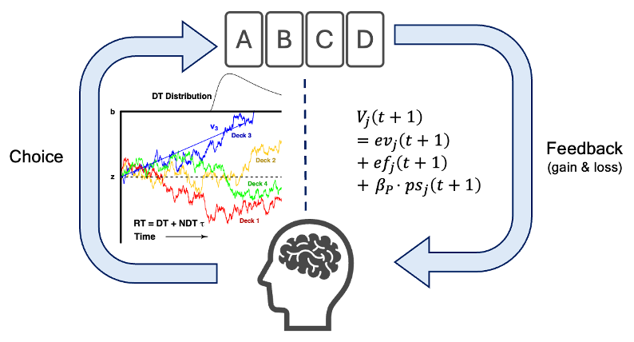
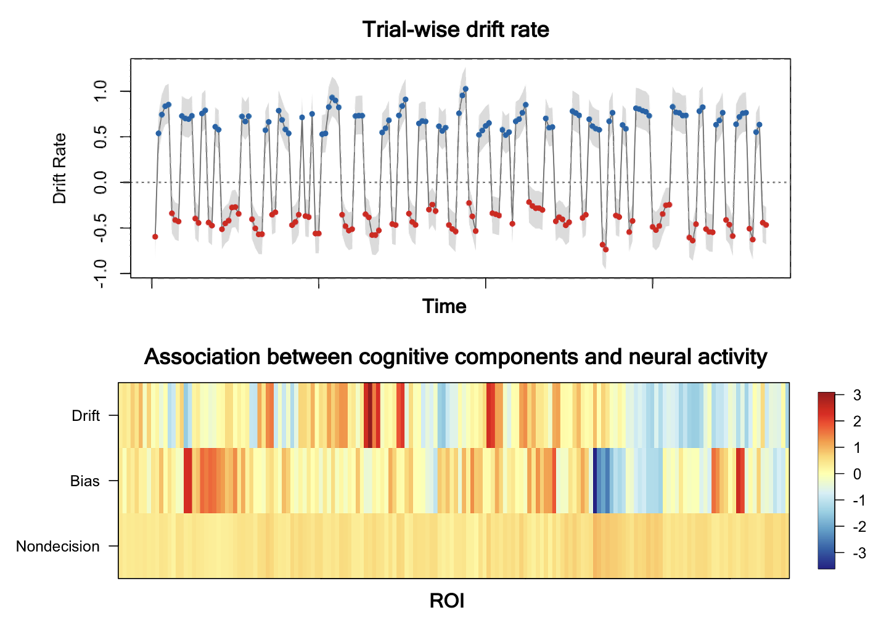
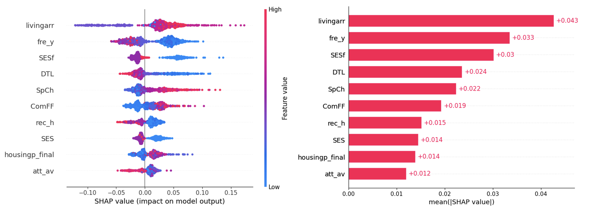

My research develops mechanistically interpretable models of psychological processes,
working across computational modeling, joint behavioral–neural modeling, and machine
learning. Below are my current projects.
Modeling Choice and Response Time in Decision-Making
Submitted
Reinforcement learning models capture how the value of choices is learned and updated,
while sequential sampling models capture how such values unfold into a decision over time.
Combining the two allows choice and response time to be modeled within a single, unified
framework, yielding a more complete account of the decision process. I integrated a
reinforcement learning model with a sequential sampling model to jointly account for
choices and response times in the Iowa Gambling Task. The reinforcement learning component
updates subjective value estimates from trial-by-trial feedback, while the sequential
sampling component links these values to within-trial decision dynamics. I validated the
model’s seven individual-level parameters through parameter recovery and applied it
to empirical task data, showing that it captures choice trajectories, win-stay/lose-shift
patterns, and response time distributions better than choice-only alternatives.

The joint model links trial-by-trial value updating from choices and feedback to the evidence-accumulation process that produces response times.
Joint Modeling of Behavioral and Neural Data
Data analysis in progress
The joint modeling framework in model-based cognitive neuroscience (MBCN; Turner et al.,
2017) estimates behavioral and neural components together with a linking function
connecting them, rather than modeling each separately and relating them afterward. I am
applying a joint modeling approach, the Lasso factor-analytic neural diffusion decision
model, to jointly analyze word recognition task data and fMRI data. The linking function
lets me identify which neural components correspond to specific decision-making
parameters. I am extending this approach to other tasks as well.

Trial-wise drift rates recovered from behavioral data (top) and their association with neural activity across regions of interest (bottom).
Interpretable Machine Learning for Psychological Prediction
Manuscript in preparation
Interpretable machine learning combines the predictive strength of flexible models with
insight into which factors drive an outcome. Using dyadic data from premarital couples, I
apply SHAP-based interpretation methods to identify which individual and partner
characteristics most strongly predict fertility desires.

SHAP values show how each individual- and partner-level factor pushes predicted fertility desire up or down, ranked by overall importance.